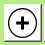
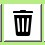
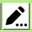

- Кнопка создания проекта. Нажмите, выберите название проекта и нажмите [Создать]
- Кнопка открытия проекта. Нажмите, выберите существующий проект в директории
 - Кнопка добавления заказа. Нажмите, в открытом окне заполните необходимые поля и нажмите [Принять]
 - Кнопка удаления заказа. Выберите нужную запись и нажмите на данную кнопку.
 - Кнопка редактирования заказа. Выберите нужную запись и нажмите на данную кнопку.
В открытом окне измените необходимые поля и нажмите [Принять].

- Кнопка открытия прикрепленного документа к заказу. Выберите нужную запись и нажмите на данную кнопку.
- Кнопка для отгрузки заказа. Выберите нужную запись и нажмите на данную кнопку.
В открытом окне, в поле введите название места прибытия заказа и нажмите [Принять].
- Введите в поле нужного вам заказчика и нажмите [Поиск] для поиска заказчика по вашим заказам. Нажмите [x] для отчистки поля.
- Выберите нужную категорию для фильтрации ваших заказов:
[Разработка] - покажет все заказы находящиеся в разработке (есть юнит или юниты, которые не имеют готовый статус)
[Готово] - покажет все готовые заказы (все юниты имеют готовый статус)
[Отгружен] - покажет все отгруженные заказы
[Все] - покажет все заказы в вашем проекте